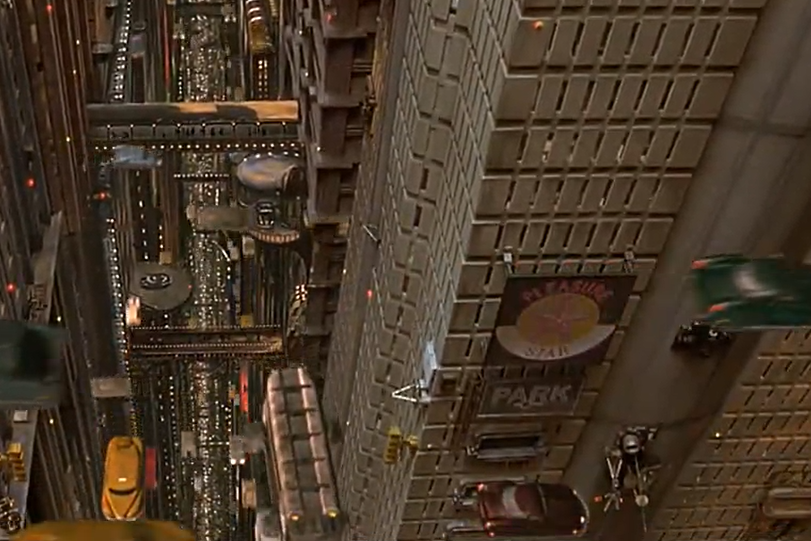

En el siglo veintitrés, el universo está amenazado por el mal. La única esperanza para la humanidad es el Quinto Elemento, que viene a la Tierra cada cinco mil años para proteger a los humanos con cuatro piedras de los cuatro elementos: fuego, agua, tierra y aire. Una nave espacial Mondoshawan está devolviendo el Quinto Elemento a la Tierra, pero es destruido por el malvado Mangalores. Sin embargo, un equipo de científicos usa el ADN de los restos del Quinto Elemento para reconstruir el ser perfecto llamado Leeloo. Ella escapa del laboratorio y se topa con el taxista y el antiguo comando de élite Major Korben Dallas que la ayuda a escapar de la policía. Leeloo le dice que debe encontrarse con el padre Vito Cornelius para cumplir su misión. Mientras tanto, The Evil utiliza al codicioso y cruel Jean-Baptiste Emanuel Zorg y un equipo de mercenarios Mangalores para recuperar las piedras y evitar la protección de Leeloo. Pero el hábil Korben Dallas se enamoró de Leeloo y decide ayudarla a recuperar las piedras
Necesidades

Dispositivo (Interfaz/tecnología):
Auto-cama
Primera Aparición:
17:27
Necesidad:
En una sociedad en la que la tecnología ha avanzado tanto, las tareas diarias se han automatizado y ya no perdemos tiempo en tareas domesticas, será tan fácil como pulsar un botón para tener una cama perfectamente hecha.

Dispositivo (Interfaz/tecnología):
Coche volador
Primera Aparición:
21:00
Necesidad:
Las ciudades se han abarrotado de gente y el trafico se a renovado, se ha pasado a un formato vertical con los coches voladores esto es posible y así tener trafico superpuesto uno encima del otro, se acabaron los atascos.

Dispositivo (Interfaz/tecnología):
Regenerador Molecular
Primera Aparición:
25:36
Necesidad:
Con este aparato se acabaron los problemas traumatológicos, da igual la gravedad de este, con tan solo quede una célula de tu cuerpo se regenerara la parte que hubieras perdido, incluso el cuerpo entero con tan solo una célula.
Dispositivo (Interfaz/tecnología):
Comida en pastillas
Primera Aparición:
46:10
Necesidad:
Imagina que pudieras comer cualquier comida que te apeteciera sin tener que prepararlo, con estas píldoras simplemente se ponen en el plato se introducen en el microondas y en unos 5 segundos ya tienes cualquier comida, un asado que se dura horas en hacer en segundos.

Dispositivo (Interfaz/tecnología):
Cambiador de caras
Primera Aparición:
46:30
Necesidad:
En el nuevo mundo en el que conocemos diferentes especies con morfologías diferentes a la nuestra, es muy útil el cambiarse a cara para que no resulte incomodo hablar con una especie a la que no has visto nunca y puede que te resulte extraño hablar con ese ser.

Dispositivo (Interfaz/tecnología):
ZF-1
Primera Aparición:
46:54
Necesidad:
La multi-arma es el armamento del futuro, con un arma que apenas tiene 50cm tienes una ametralladora, un lanzallamas, un rayo congelante, un lanza misiles y además tiene una opción de auto apuntado que hace que una vez fijado el blanco no hace falta que apuntes mas, las balas irán al blanco automáticamente.

Dispositivo (Interfaz/tecnología):
Multipass
Primera Aparición:
1:08:03
Necesidad:
Con esta tarjeta olvídate de todas las demás, no necesitaras nada mas, con esta tarjeta podrás identificarte en todas partes desde coger un vuelo hasta lanzar un cohete nuclear.
Dispositivo (Interfaz/tecnología):
Robots limpiadores
Primera Aparición:
54:27
Necesidad:
Estas harto de limpiar el suelo continuamente, esto se acabo con los robots limpiadores tendrás el suelo reluciente todo el día y no hace falta que los enciendas ellos detectan cuando el suelo se mancha y lo barren, lo friegan incluso lo enceran.